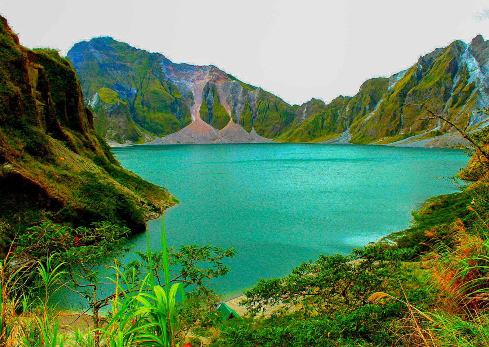
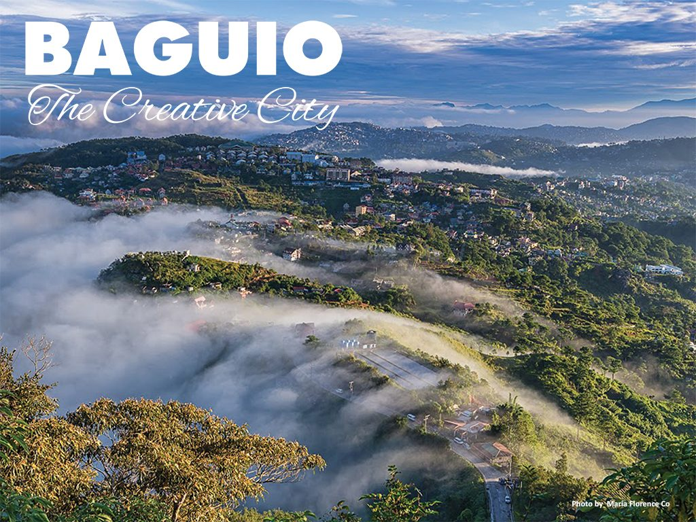
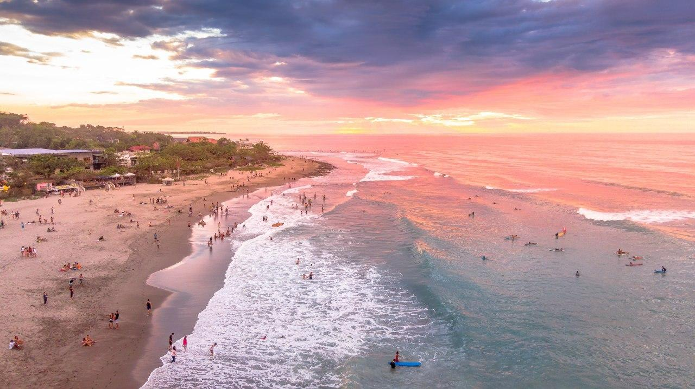
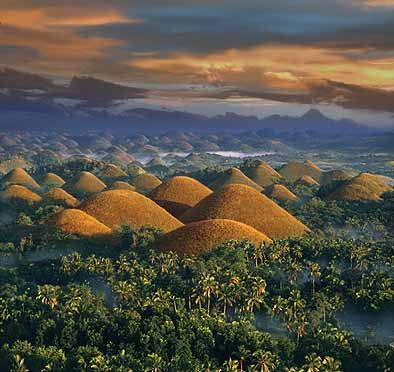
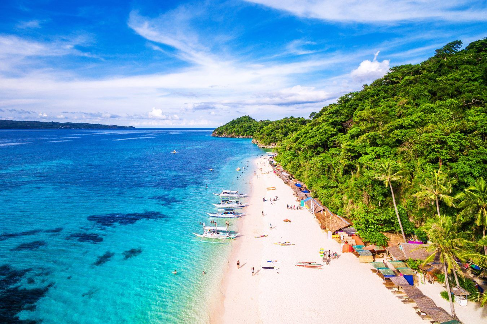
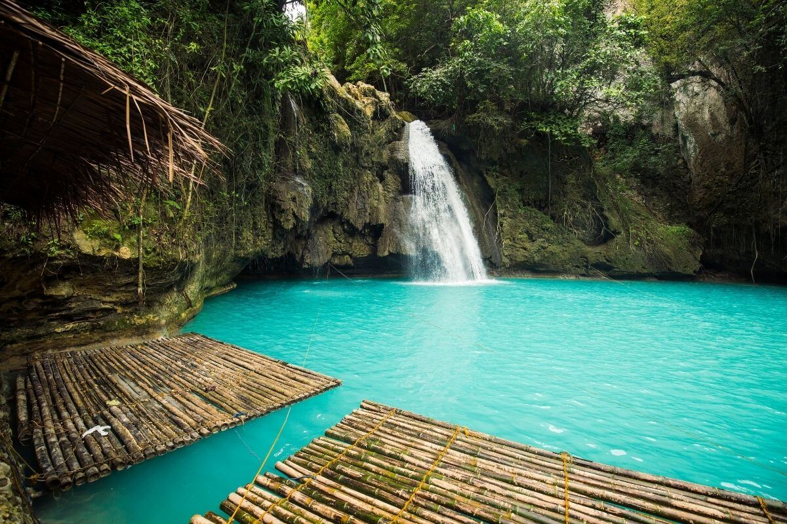
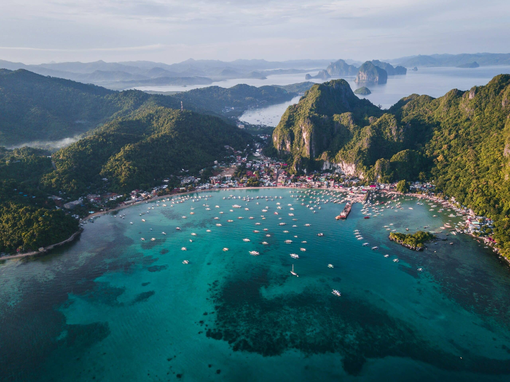
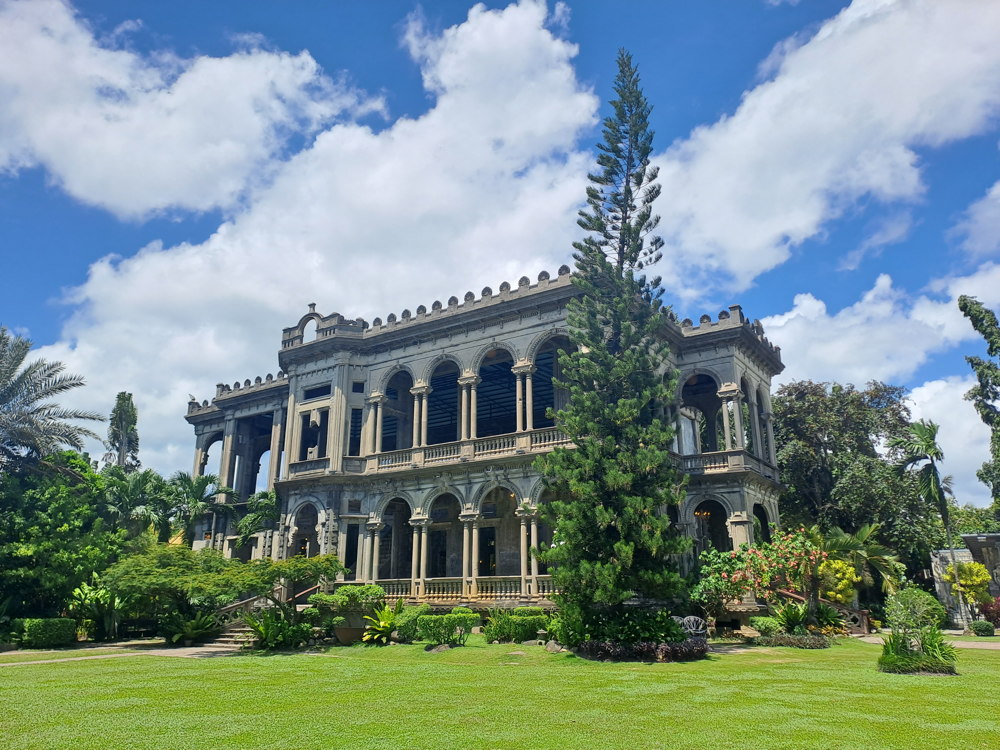
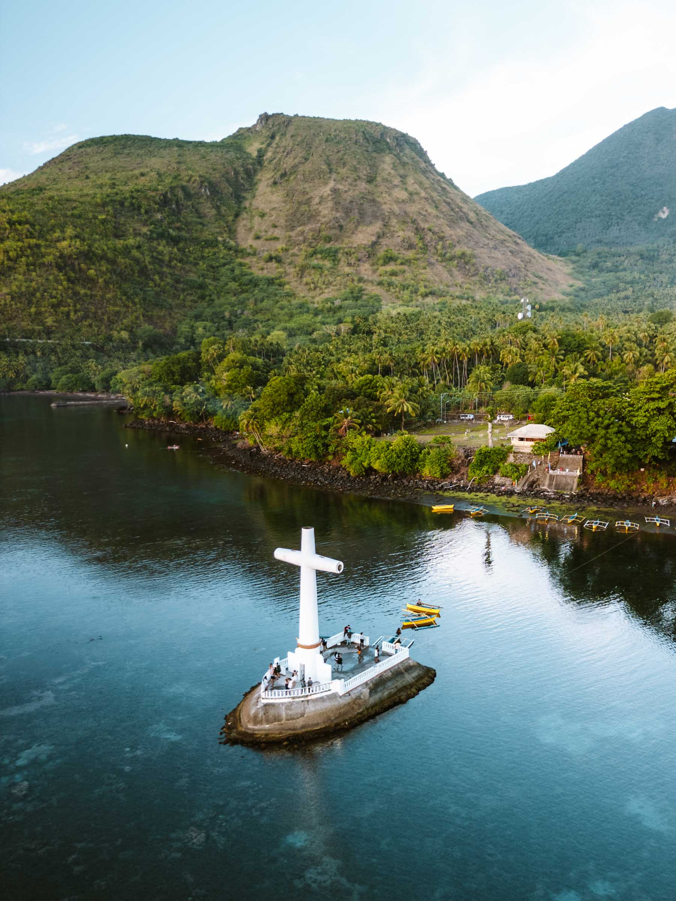
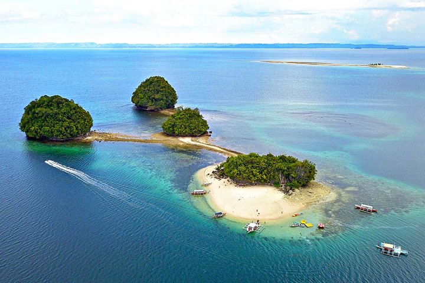

| LUZON | ||||
 Location: Ifugao Description: Ancient rice terraces carved into the mountains. |
 Location: Albay Description: Famous for its perfect cone shape. |
 Location: Zambales Description: Known for its beautiful crater lake. |
 Location: Baguio City Description: The Summer Capital of the Philippines. |
 Location: La Union Description: A popular destination for surfing. |
|
VISAYAS |
||||
|
 Location: Bohol, Chocolate Hills Description: Over 1,200 unique cone-shaped hills. |
 Location: Aklan Description: Famous for its white sand beaches. |
 Location: Cebu Description: A stunning waterfall with turquoise water. |
 Location: Siquijor Description: Known for its beaches and natural beauty. |
 Location: Negros Occidental Description: A historic mansion called the Taj Mahal of Negros. |
|
MINDANAO |
||||
 Location: Surigao del Norte Description: The surfing capital of the Philippines. |
 Location: Camiguin Description: An island with volcanoes and hot springs. |
 Location: Davao Description: The highest mountain in the Philippines. |
 Location: Surigao del Sur Description: Famous for its crystal-clear blue water. |
 Location: Surigao del Sur Description: A group of beautiful white sand islands. |
Name: Vianca R. Mendoza
Grade & Section: 11 - LATORENA